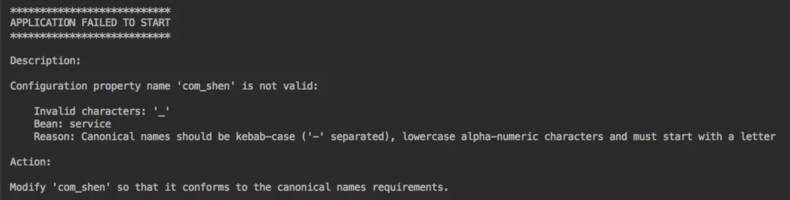
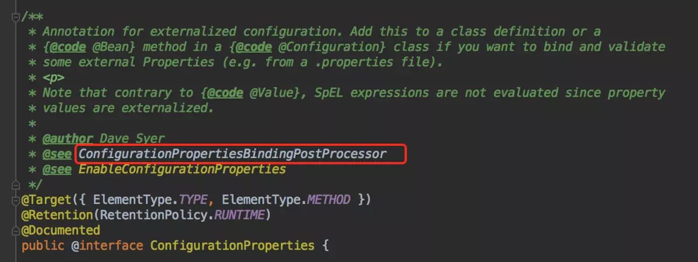
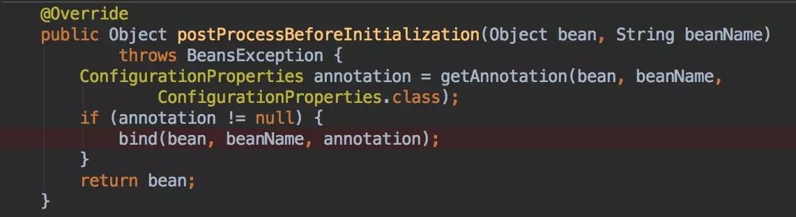
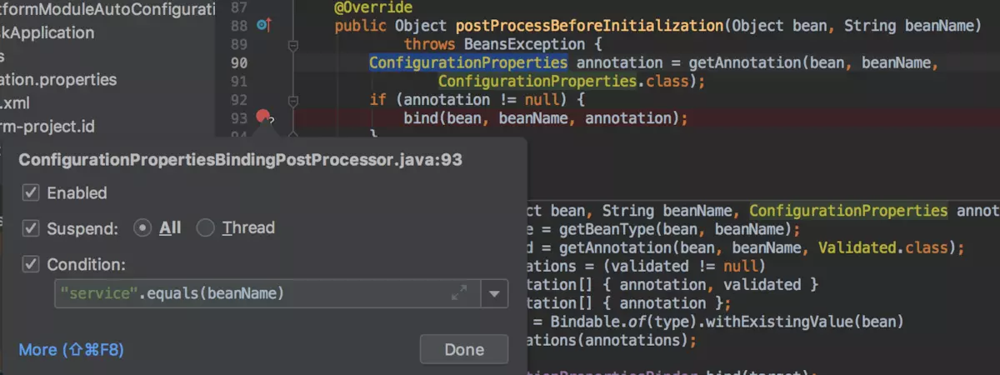
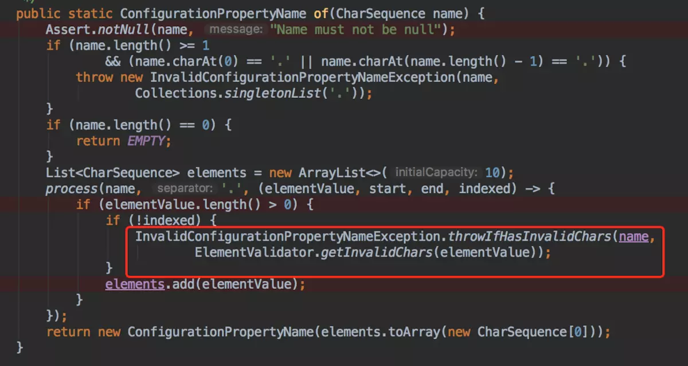
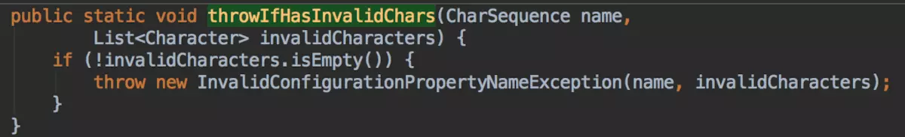
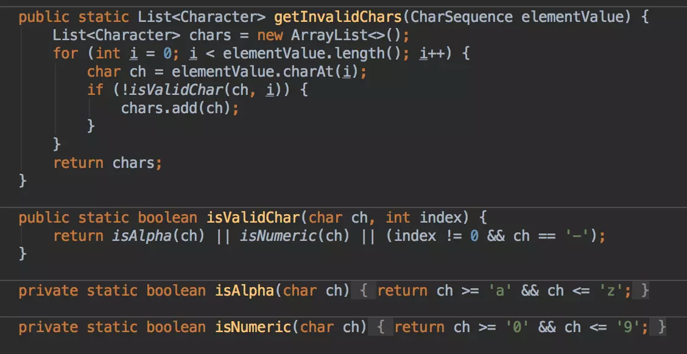
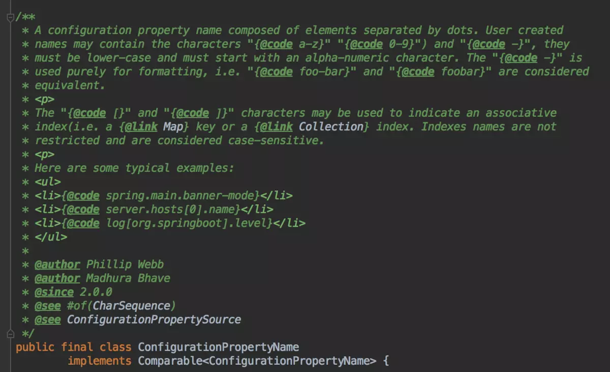

原文连接:https://www.cnblogs.com/coderxiaohei/p/11713032.html
最近公司项目在做SpringBoot的升级，在升级过程中遇到了一些问题，简单记录一下，做个分享。另外，本文中的程序只为示例代码，并非公司生产环境代码。
遇到什么问题
从SpringBoot1.x升级到SpringBoot2.x之后，解决完编译异常，运行程序，在程序启动时报错：

报错信息就已经很直白的告诉了我们错误原因：
配置属性名称“com_shen”无效
无效字符： '_'， 原因：规范名称应为kebab-case（用'-'分隔），小写字母数字字符，并且必须以字母开头
怎么解决
经过排查，是因为在application.properties文件中有如下一个配置项：
com_shen.name=xiaohei对应Java程序代码：
@Getter
@Setter
@ConfigurationProperties(prefix = "com_shen")
public class Service {
private String name;
}
结合报错日志，我们可以很容易的解决这个问题，去掉配置项中的_，将配置项name修改为com.shen.name即可。
源码解析
你以为文章写到这里就结束了吗？其实并没有。hhhhhh，通过这个问题，我们来看一下SpringBoot2.x的内部源码。什么，你不知道该从哪里入手来看这个源码，没关系，我们一步一步来。
点开@ConfigurationProperties源码，

在Spring中，大量的功能都是通过BeanPostProcessor来实现的。而且，Spring中的源码注释写的非常的仔细。通过源码注释我们可以猜到可能是ConfigurationPropertiesBindingPostProcessor这个类在负责@ConfigurationProperties注解的背后支持。
点开ConfigurationPropertiesBindingPostProcessor类源码，发现在该类中Override了BeanPostProcessor的postProcessBeforeInitialization方法：

在这个方法中，调用了bind(bean, beanName, annotation);方法。这个方法名叫"绑定"，方法中传入了bean、beanName和annotation的信息，经验告诉我这个方法大概率就是在负责解析@ConfigurationProperties，进行属性绑定。
于是，在这里打一个条件断点，debug运行项目：

通过debug发现的确是这个方法在进行属性绑定。而且底层调用了org.springframework.boot.context.properties.bind.Binder#bind(String, Bindable<T>, BindHandler) 方法：

在这个bind方法中，又调用了另一个方法bind(ConfigurationPropertyName.of(name), target, handler);，而且通过name生成了ConfigurationPropertyName对象ConfigurationPropertyName.of(name)，通过方法名我们可以猜测，这个方法可能是在负责解析Configuration Property Name，项目启动的报错信息很有可能是这个方法中抛出的。点开源码：

发现在这个方法中，调用了InvalidConfigurationPropertyNameException.throwIfHasInvalidChars(name,ElementValidator.getInvalidChars(elementValue));。Spring代码命名真的是太优雅了，虽然名称很长，但是让源码阅读者一看就能明白这个方法在做什么。


通过源码，我们可以看到，在SpringBoot中对Configuration property name中的字符进行了有效性的判断，判断规则如上图所示。
ElementValidator类是ConfigurationPropertyName的一个内部类。ConfigurationPropertyName是SpringBoot2.0新增的一个类，让我们一起来阅读一下类中注释，了解一下这个类：

机器翻译结果如下：
由点分隔的元素组成的配置属性名称。 用户创建的名称可以包含字符“ a-z”，“ 0-9”）和“-”，它们必须为小写字母，并且必须以字母数字字符开头。 “-”仅用于格式化，即“ foo-bar”和“ foobar”被认为是等效的。
“ [”和“]”字符可用于表示关联索引（即Map键或Collection索引。索引名称不受限制，并且区分大小写。以下是一些典型示例：
spring.main.banner-mode
server.hosts [0]。名称
日志[org.springboot] .level
使用@Value
我们知道，SpringBoot中除了可以使用@ConfigurationProperties之外，还可以使用@Value。
Demo程序如下：
@Getter
@Setter
@Component
public class Service {
@Value("${com_shen.name}")
private String name;
}application.properties文件:
com_shen.name=xiaohei在这种情况下，项目依旧启动成功了，而且成功的获取到了com_shen.name的属性值。也就是说，@Value注解中并没有表达式做限制。
拓展阅读
Property Binding in Spring Boot 2.0 ： https://spring.io/blog/2018/03/28/property-binding-in-spring-boot-2-0
欢迎关注公众号，大家一起学习成长。